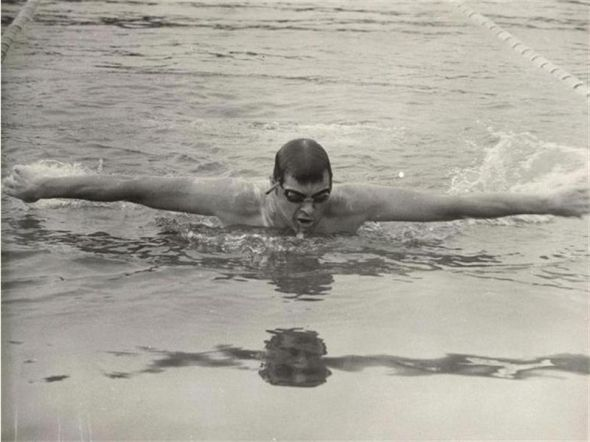

Media & Press

Coverage of a marathon swimming record.
A historical archive of endurance, discipline, and legacy.

Dobri Dinev was a Bulgarian marathon swimmer and coach whose career spanned competitive swimming, long-distance endurance events, and sports education. He set multiple national and international records and later contributed to the development of swimming through coaching and event organization.
His competitive career focused primarily on pool and marathon swimming, disciplines that demand not only physical endurance but also mental resilience and precise pacing. Over the course of multiple years, Dinev participated in extended-distance swims that tested the limits of sustained human performance, earning recognition for both record-setting results and consistency across events.
Beyond competition, Dinev remained deeply involved in the sport through coaching and organizational roles. He worked with swimmers at different stages of development, emphasizing technique, discipline, and respect for the physical demands of the sport. His approach reflected a belief that endurance swimming was as much a mental practice as a physical one.
Later in his career, his activities extended beyond Bulgaria, contributing to the transmission of swimming knowledge and training philosophy across communities. Through both direct coaching and the organization of events, Dobri Dinev played a role in sustaining and developing marathon swimming as a structured and respected discipline.
Dobri Dinev approached marathon swimming as a long-term discipline rather than a sequence of isolated competitions. His training emphasized gradual adaptation, consistency, and the careful management of physical strain over extended periods. Rather than focusing exclusively on speed, his preparation prioritized efficiency of movement, controlled breathing, and the ability to maintain form under fatigue.
He viewed endurance events as an exercise in planning and restraint, where success depended on pacing strategies and mental composure as much as physical strength. This philosophy shaped both his own competitive performances and his later work as a coach.
In training others, Dinev stressed foundational technique and patience, often discouraging premature specialization or excessive intensity. His methods reflected an understanding of the cumulative nature of endurance training and the importance of sustainability in athletic development.
Many of Dobri Dinev’s achievements took place during a period when marathon swimming received limited media attention and institutional support. Long-duration swimming events were often organized with minimal resources, relying heavily on individual initiative and local sporting communities.
Within this environment, record-setting performances carried particular significance. They required not only athletic capability but also logistical coordination, self-discipline, and resilience in the absence of modern training technologies or widespread sponsorship.
Dinev’s results contributed to the recognition of marathon swimming as a serious athletic pursuit and helped establish benchmarks for endurance performance within Bulgarian competitive swimming. His participation in both national and international events placed him among a small group of athletes committed to advancing the discipline during this era.
Following his competitive career, Dobri Dinev remained actively engaged in swimming through coaching and mentorship. He worked with swimmers across age groups, applying principles developed through years of endurance training and competition.
His coaching emphasized technical precision, structured progression, and respect for physical limits. Rather than prioritizing immediate results, he encouraged athletes to develop sustainable habits and a long-term relationship with the sport.
In addition to individual coaching, Dinev contributed to the organization of swimming events and competitions, supporting the broader infrastructure necessary for athlete development. His involvement reflected a commitment to maintaining high standards within the sport and fostering opportunities for future generations of swimmers.
Dobri Dinev’s career was documented through a range of media sources, including newspapers, sports publications, and television programming. Coverage typically focused on the demanding nature of marathon swimming events and the endurance required to complete them successfully.
Multiple press articles highlighted record attempts and competitive milestones, situating his performances within the broader context of Bulgarian and international swimming. Television interviews and news segments further contributed to public awareness of marathon swimming as a specialized and physically demanding discipline.
This media record provides valuable insight into both Dinev’s individual career and the public perception of endurance swimming during the period in which he was active.
Dobri Dinev’s legacy lies not only in recorded results and documented achievements, but also in his sustained contribution to the culture of endurance swimming. Through competition, coaching, and organization, he helped maintain continuity within a demanding and often underrepresented discipline.
His career illustrates the role of individual dedication in sustaining sporting traditions, particularly in areas where institutional support may be limited. The preservation of records, media coverage, and personal accounts ensures that this contribution remains accessible to future researchers, athletes, and historians of the sport.
This website exists in part to serve that purpose: to document, contextualize, and preserve the historical record of Dobri Dinev’s involvement in marathon swimming.
This website serves as a historical and archival resource. It includes contextual and interpretive material that may not meet the sourcing requirements of encyclopedic platforms such as Wikipedia. Wherever possible, factual claims are supported by published records and media documentation. Interpretive sections are presented as historical context rather than definitive analysis.
| Year | Stroke | Time | Distance | Location |
|---|---|---|---|---|
| Butterfly | 8:59:45 | 25 Km | ||
| Butterfly | 16:35:10 | 40 Km | ||
| Butterfly | 20:09:17 | 50 Km | ||
| 1984 | Butterfly | 24 Hours | 54.125 Km | |
| IM - Individual Medley | 4 x 6 Hours | 70.6 Km | ||
| 1985 | IM - Individual Medley | 38:31:11 | 4 x 25Km |